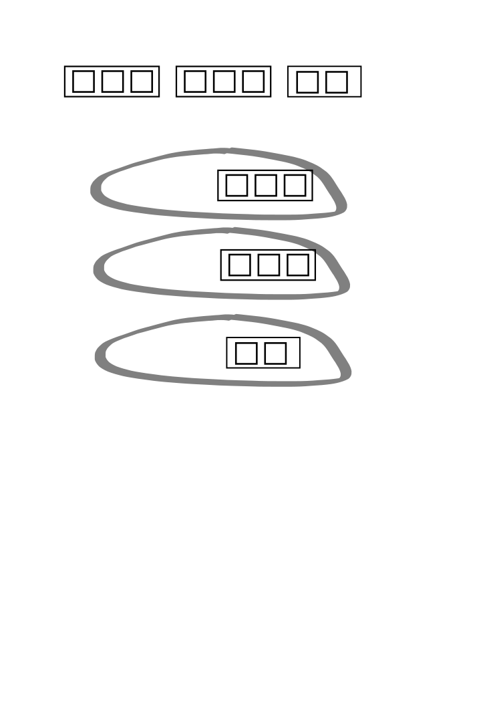
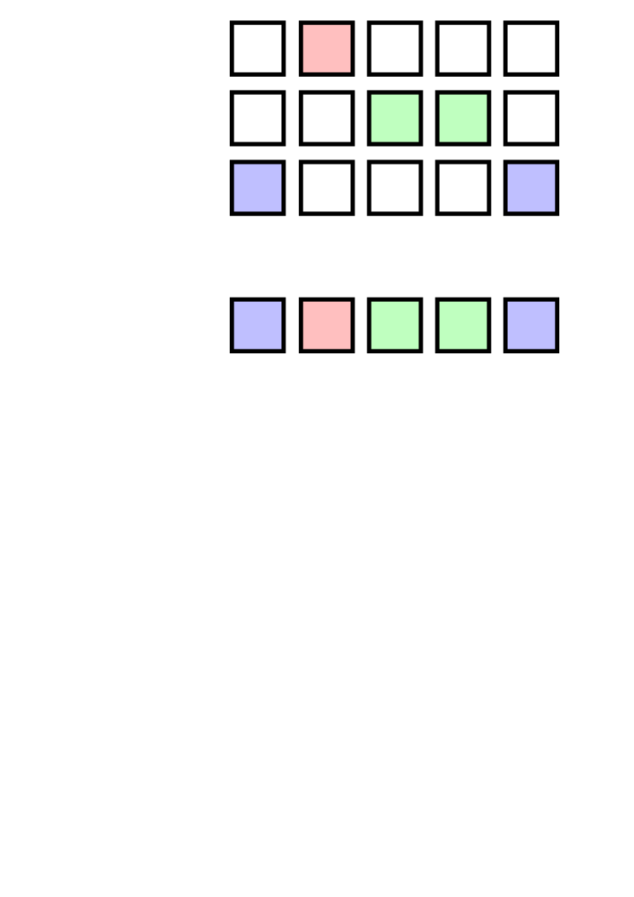

Map iterators¶
map rank Each v' same as v each Each Left v2\: 2 Each Right v2/: 2 Each Parallel v1': 1 peach Each Prior v2': variadic prior Case i' 1+max i
v1: value (rank 1) v: value (rank 1-8) v2: value (rank 2) i: vector of ints≥0
The maps are iterators that derive uniform functions that apply their values once to each item of a dictionary, a list, or conforming lists.
Each¶
Apply a value item-wise to a dictionary, list, or conforming lists and/or dictionaries.
(v1')x v1'[x] v1 each x
x v2'y v2'[x;y]
v3'[x;y;z]
Where v is an applicable value, v' applies v to each item of a list, dictionary or to corresponding items of conforming lists. The derived function has the same rank as v.
q)(count')`a`b`c!(1 2 3;4 5;6 7 8 9) / unary
a| 3
b| 2
c| 4
Each Both
Each applied to a binary value is sometimes called each both and can be applied infix.
q)1 2 3 in'(1 0 1;til 100;5 6 7) / in' is binary, infix
110b
Iterations of ternary and higher-rank values are applied with brackets.
q){x+y*z}'[1000000;1 0 1;5000 6000 7000] / ternary
1005000 1000000 1007000
Each is redundant with atomic functions.
each keyword¶
The mnemonic keyword each can be used to apply a unary value without parentheses or brackets.
q)(count')string `Clash`Fixx`The`Who
5 4 3 3
q)count'[string `Clash`Fixx`The`Who]
5 4 3 3
q)count each string `Clash`Fixx`The`Who
5 4 3 3
Each Left and Each Right¶
Apply a binary value between one argument and each item of the other.
Each Left x v2\: y v2\:[x;y] |-> v2[;y] each x
Each Right x v2/: y v2/:[x;y] |-> v2[x;] each y
The maps Each Left and Each Right take binary values and derive binary functions that pair one argument to each item of the other. Effectively, the map projects its value on one argument and applies Each.
| Each Left | Each Right | |
|---|---|---|
| syntax: | x f\:y |
x f/:y |
| equivalent: | f[;y] each x |
f[x;] each y |
q)"abcde",\:"XY" / Each Left
"aXY"
"bXY"
"cXY"
"dXY"
"eXY"
q)"abcde",/:"XY" / Each Right
"abcdeX"
"abcdeY"
q)m / binary map
"abcd"
"efgh"
"ijkl"
q)m[0 1;2 3] ~ 0 1 m\:2 3
1b
q)0 1 m/:2 3
"cg"
"dh"
q)(flip m[0 1;2 3]) ~ 0 1 m/:2 3
1b
Left, right, cross¶
Each Left combined with Each Right resembles the result obtained by cross.
q)show a:{x,/:\:x}til 3
0 0 0 1 0 2
1 0 1 1 1 2
2 0 2 1 2 2
q)show b:{x cross x}til 3
0 0
0 1
0 2
1 0
1 1
1 2
2 0
2 1
2 2
q){}0N!a
((0 0;0 1;0 2);(1 0;1 1;1 2);(2 0;2 1;2 2))
q){}0N!b
(0 0;0 1;0 2;1 0;1 1;1 2;2 0;2 1;2 2)
q)raze[a] ~ b
1b
Atoms and lists in the domains of these iterators
The domains of \: and /: extend beyond binary values to include certain atoms and lists.
q)(", "/:)("quick";"brown";"foxes")
"quick, brown, foxes"
q)(0x0\:)3.14156
0x400921ea35935fc4
This is exposed infrastructure.
Use the keywords vs and sv instead.
Each Parallel¶

Assign sublists of the argument list to secondary tasks, in which the unary value is applied to each item of the sublist.
(v1':)x v1':[x] v1 peach x
The Each Parallel map takes a unary value as argument and derives a unary function. The iteration v1': divides its list or dictionary argument x between available secondary tasks. Each secondary task applies v1 to each item of its sublist.
Command-line option -s,
Parallel processing
❯ q -s 2
kdb+ 5.0.20251113 2025.11.13 Copyright (C) 1993-2025 Kx Systems
...
q)\s
2i
q)\t inv each 2 1000 1000#2000000?1f
2601
q)\t inv peach 2 1000 1000#2000000?1f
1462
peach keyword¶
The binary keyword peach can be used as a mnemonic alternative.
The following are equivalent.
v1':[list]
(v1':)list
v1 peach list
Higher-rank values
To parallelize a value of rank >1, use Apply to evaluate it on a list of arguments.
Alternatively, define the value as a function that takes a parameter dictionary as argument, and pass the derived function a table of parameters to evaluate.
Parallel processing
Table counts in a partitioned database
Q for Mortals
A.49 peach
Each Prior¶
Apply a binary value between each item of a list and its preceding item.
(v2':)x v2':[x] (v2)prior x
x v2':y v2':[x;y]
The Each Prior map takes a binary value and derives a variadic function. The derived function applies the value between each item of a list or dictionary and the item prior to it.
q)(-':)1 1 2 3 5 8 13
1 0 1 1 2 3 5
The first item of a list has, by definition, no prior item. If the derived function is applied as a binary, its left argument is taken as the ‘seed’ – the value preceding the first item.
q)1950 -': `S`J`C!1952 1954 1960
S| 2
J| 2
C| 6
If the derived function is applied as a unary, and the value is an operator with an identity element $I$ known to q, $I$ will be used as the seed.
q)(*':)2 3 4 / 1 is I for *
2 6 12
q)(,':)2 3 4 / () is I for ,
2
3 2
4 3
q)(-':) `S`J`C!1952 1954 1960 / 0 is I for -
S| 1952
J| 2
C| 6
If the derived function is applied as a unary, and the value is not an operator with a known identity element, a null of the same type as the argument (first 0#x) is used as the seed.
q){x+2*y}':[2 3 4]
0N 7 10
Q for Mortals §6.7.9 Each Prior
prior keyword¶
The mnemonic keyword prior can be used as an alternative to ':.
q)(-':) 5 16 42 103
5 11 26 61
q)(-) prior 5 16 42 103
5 11 26 61
q)deltas 5 16 42 103
5 11 26 61
Case¶
Pick successive items from multiple list arguments: the left argument of the iterator determines from which of the arguments each item is picked.
int'[a;b;c;…]
Where
intis an integer vector- $args$
[a;b;c;…]are the arguments to the derived function
the derived function int' returns $r$ such that
$r_i$ is ($args_{int_i})_i$

The derived function int' has rank max[int]+1.
Atom arguments are treated as infinitely-repeated values.
q)0 1 0'["abc";"xyz"]
"ayc"
q)e:`one`two`three`four`five
q)f:`un`deux`trois`quatre`cinq
q)g:`eins`zwei`drei`vier`funf
q)l:`English`French`German
q)l?`German`English`French`French`German
2 0 1 1 2
q)(l?`German`English`French`French`German)'[e;f;g]
`eins`two`trois`quatre`funf
q)/ Extra arguments don't signal a rank error
q)0 2 0'["abc";"xyz";"123";"789"]
"a2c"
q)0 1 0'["a";"xyz"] /atom "a" repeated as needed
"aya"
Dictionaries can be used instead of lists, as long as the lengths of all lists and dictionaries are the same. All dictionaries must have the same keys in the same order.
q)0 2 0'[`a`b`c!"abc";"xyz";"123";`a`b`c!"789"]
"a2c"
q)0 2 0'[`a`b`c!"abc";"xyz";"123";`a`b!"78"]
'length
q)0 2 0'[`a`b`c!"abc";"xyz";"123";`b`a`c!"789"]
'domain
You can use Case to select between record fields according to a test on some other field.
Suppose we have lists h and o of home and office phone numbers, and a third list p indicating at which number the subject prefers to be called.
q)([]pref: p;home: h; office: o; call: (`home`office?p)'[h;o])
pref home office call
---------------------------------------------------------
home "(973)-902-8196" "(431)-158-8403" "(973)-902-8196"
office "(448)-242-6173" "(123)-993-9804" "(123)-993-9804"
office "(649)-678-6937" "(577)-671-6744" "(577)-671-6744"
home "(677)-200-5231" "(546)-864-5636" "(677)-200-5231"
home "(463)-653-5120" "(636)-437-2336" "(463)-653-5120"
Case is a map. Consider the iteration’s arguments as a matrix, of which each row corresponds to an argument.
q)a:`Kuh`Hund`Katte`Fisch
q)b:`vache`chien`chat`poisson
q)c:`cow`dog`cat`fish
q)show m:(a;b;c)
Kuh Hund Katte Fisch
vache chien chat poisson
cow dog cat fish
Case iterates the int vector as a mapping from column number to row number. It is a simple form of scattered indexing.
q)i:0 1 0 2
q)i,'til count i
0 0
1 1
0 2
2 3
q)m ./:i,'til count i
`Kuh`chien`Katte`fish
q)i'[a;b;c]
`Kuh`chien`Katte`fish
Table counts in a partitioned database
Empty lists¶
A map’s derived function is uniform. Applied to an empty right argument it returns an empty list without an evaluation.
q)()~{x+y*z}'[`foo;mt;mt] / generic empty list ()
1b
Watch out for type changes when evaluating lists of unknown length.
q)type (2*')til 5
7h
q)type (2*')til 0
0h
q)type (2*)til 0
7h
Source adapted from the Documentation for kdb+ and q by KX Systems and contributors, used under CC BY 4.0. Attribution, provenance and independence notice.